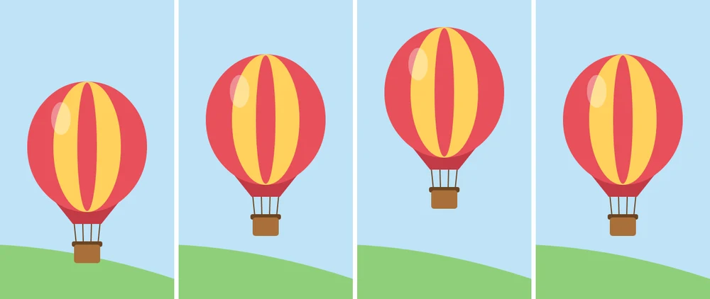
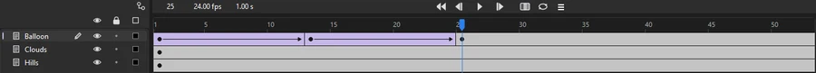
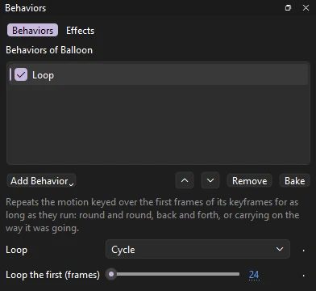

Tutorials
A cycle with Loop
Key a balloon's bob once and let the Loop behavior repeat it for the whole shot, then make it bob higher in Function Curves.
This page is also a lesson inside Phoenix: choose and start A cycle with Loop, and Phoenix points at each control as you go. It takes about 7 minutes.
To follow along here instead, download the starting document, loop-cycle.fla, and open it with .

Much of animation repeats: a bob, a wave, a walk. Key it once, and the Loop behavior plays it again and again for as long as the shot runs.
The Balloon layer holds a hot-air balloon, the graphic symbol Balloon, keyed on frames 1, 13 and 25. Two classic tweens carry it up and back down: one bob, a second long. After frame 25 it hangs still until the end, frame 96.
1. Play it
Press Enter, or click the play button in the timeline header. The balloon bobs once, then stops dead in the air.
2. Select the last keyframe
Press Enter again to stop. In the timeline, click frame 25 of the Balloon layer. That selects the balloon on it, with a box around it on the stage.
A behavior goes on the instance of one keyframe and works over that keyframe's frames. This keyframe runs from frame 25 to the end, the frames that need the bob.

3. Open the Behaviors panel
Choose if it is not showing. It lists the behaviors on the selected balloon: none yet.
4. Add Loop

Click Add Behavior and choose Loop. Its settings show below the list: Loop is Cycle, round and round, and Loop the first (frames) is 24.
Loop looks back to where the balloon's keyframes start, frame 1, and repeats their first 24 frames. That is exactly one bob: frame 25 is the same pose as frame 1, so each bob runs into the next without a jump.
5. Play it
Press Enter, or click the play button in the timeline header. The balloon bobs all the way to frame 96, four bobs from one set of keys.
6. Open Function Curves
Press Enter again to stop. Choose . It opens beside the timeline, narrow. Drag the edge between them to the left until the panel is about half as wide as the window, so the dots on its graph stand apart.
7. Show the height
Function Curves shows one property of the layer picked in the timeline, Balloon, over its frames. In the list at its top right, choose Y.
The solid line is the balloon's height as keyed, with a dot for each keyframe: frames 1, 13 and 25. Y counts down from the top of the stage, so the balloon rising shows as a dip, and after frame 25 the line is flat.
The dashed line is what Loop makes of it: the same dip, again and again, to the end.
8. Bob higher
Double-click the middle dot, on frame 13. In the Keyframe Value window, type 230 and click OK. You can also drag the dot down; the value shows as you drag.
The dip gets deeper, and so does every dashed one after it. Loop repeats the keys as they are now, so one change reaches every bob.
9. Play it
Press Enter, or click the play button in the timeline header. The balloon floats higher on every bob, all the way to the end.
What you did
You keyed one bob and looped it for the whole shot, then changed every bob at once by changing the one you keyed.
Keep the first and last keys of a cycle the same, and set Loop the first (frames) to the frames between them, so each time round runs into the next. Back and Forth plays the keyed frames forward and then backward, and Continue carries on the way the motion was going at the speed it ended with: a drift that never stops. Function Curves shows X, rotation, scale, alpha and more the same way; pick one from its list.
For everything this tutorial touches on, see The behaviors and Function curves.